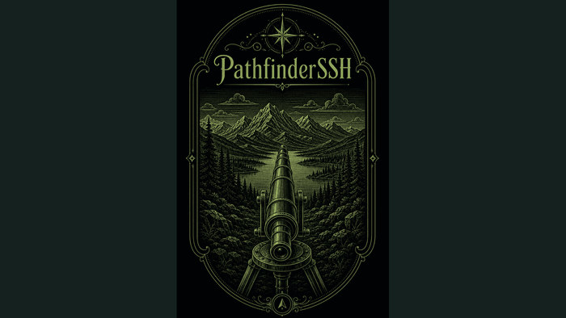

CDP · LLDP
SSH · serial
OS keyring
A terminal that already knows the topology
Every SSH client treats a network as a flat list of hostnames someone typed in by hand. Discovery lives in a second tool, capture in a third, and the map in a diagram nobody has opened since the last cutover — so the thing you connect with is the one thing that knows nothing about the network.
Make the client itself the discovery tool. Seed one address, crawl outward on CDP and LLDP, and let the resulting topology be the session tree — click a node and you're on it. The same crawl feeds inventory and config capture with deduplicated history, and exports to draw.io so the diagram is a build artifact instead of a chore. Credentials sit in an OS-backed vault; jump hosts, serial, and legacy KEX are first-class because real networks still have all three.
